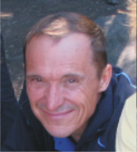

Свами Йога Камал
6 октября 2009 года в 17 часов Камал ушел из тела.
Имя Свами Йога Камал имеет несколько значений и может быть переведено как «Союз Чудес».
Началом его мистического Поиска стало переживание, случившееся с ним в 20 лет. За сорок минут Камал прожил всю свою будущую жизнь, включая момент смерти. Наблюдая собственные похороны, он задал вопрос:
— И это все? Последовал ответ: — А тебе этого мало?
— Но ради чего все это? — спросил он.
— Если тебе действительно нужно это знать, ищи…
Дальнейшая его жизнь стала поиском ответа на заданный вопрос.
В 24 г. Камал пережил опыт выхода за пределы тела и ума, который сопровождался остановкой функции внешнего дыхания в течение нескольких дней, что в классической йоге известно как «Кевали-кумбхака» или «Остановка дыхания без вдоха и выдоха». Этот опыт определил его дальнейший интерес к практикам и методам, направленным на насыщение Светом Сознания материи тела. Он пропустил через себя все известные методы повышения энергетического потенциала тела посредством очищения, голодания, сыроедения, физических нагрузок и дыхательных техник (голотропное дыхание, вайвейшн, ребефинг, метод ВЛГД К. П. Бутейко).
В конце 70-х годов он стал одним из первых в Союзе саньясинов Ошо Раджниша. В личной переписке Ошо указал Камалу на то, что ему нет необходимости находится рядом с Мастером и что его путь — быть там, где он находится сейчас.
В 80-е годы Камал организовывал и участвовал в группах Ошо-медитаций. А с начала 90-х годов начал сам вести группы дзен-театра, дзен-живописи, Ошо-терапии.
С 1994 г. изменился характер его работы с людьми. Теперь акцент делался не на получении и накоплении разнообразных переживаний, а на углублении поиска своей истинной природы, того, что всегда интересовало и интересует человека. Выражением этого поиска является учение о недвойственности (Адвайта), суть которого — растворение иллюзии отдельности и осознание единства через проявления этой отдельности, что приводит к иному энергетическому и эмоциональному измерению жизни.
В 1995 г. Камал предложил новый метод трансформации, синтезировав свой многолетний опыт практики затаивания дыхания и методики К. П. Бутейко. С этого момента на его группах стали использоваться практики очищения, сыроедения, затаивания дыхания, дза-дзен, осознавании процессов и механизмов ума, т. е. структур, которые созданы мыслью и которые ограничивают человеческий ум в знании собственной Природы. Смысл этой работы — в отстройке тела как носителя Сознания для проведения более высоких энергий Реальности в жизнь человека.
В настоящее время отрабатывается технология трансформации тела и сознания посредством длительных физических нагрузок и углубления в практику затаивания дыхания, а также очищения и специального питания. Семинары и группы проводятся в различных городах России и Украины (Воронеж, Днепропетровск, Бердянск, Санкт-Петербург, Москва).
Добавить комментарий
WWWtext-text
Новости
14.11.09
Семинар Сумирана
С 1го по 14 февраля в Перми состоится семинар Сумирана.
В основу группы положено сочетание древних Даосских и Буддийских практик. Принимая участие в данном семинаре Вы имеете возможность проработать энергетические каналы в теле и высвободить связанную в зажимах и блоках энергию, посредством Китайской динамической йоги ТАЙЦЗИ-ЦЮАНЬ и ЦИГУНА.
В статической медитации ДЗА-ДЗЕН эта энергия, двигаясь от периферии к Центру, слой за слоем будет трансформировать все уровни Вашего существа.
14.11.09
Фестиваль летом 2010 года
Будущий фестиваль адвайты состоится 26 июля - 5 августа 2010 года.
Мы приглашаем к сотрудничеству
- - преподавателей и инструкторов энергетических, медитационных, других практик
- - организаторов в других городах
- - инвесторов
- - музыкантов
условия участия будут выложены чуть позже.
В том случае, если вам интересно это предложение, можете связываться со мной:
г. Пермь: +7-922-241-60-91 (Тамир)
+7-912-888-5002 (Вит Асми)